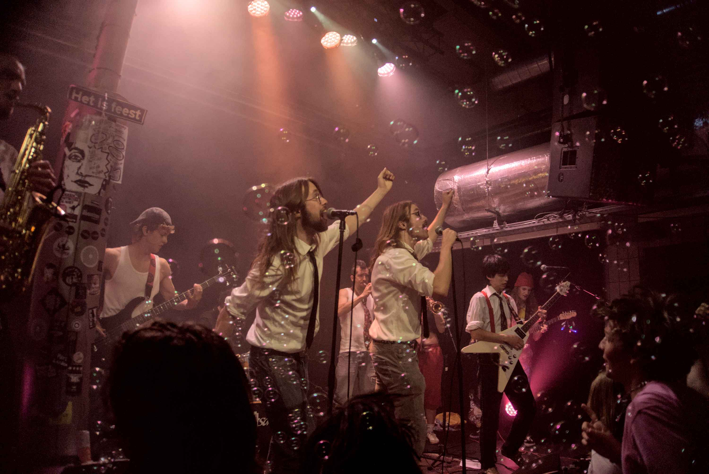
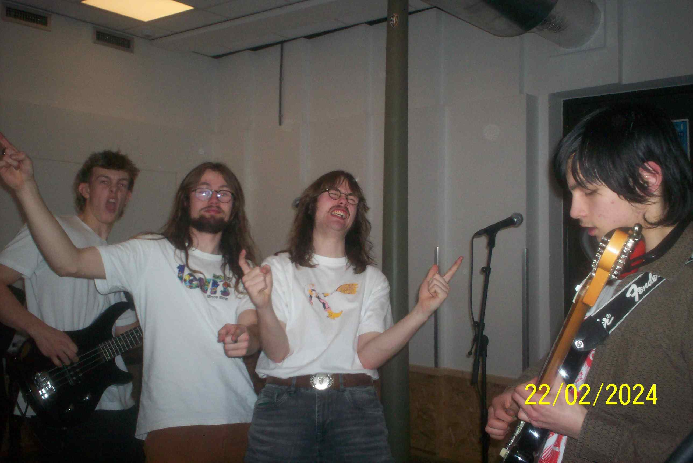
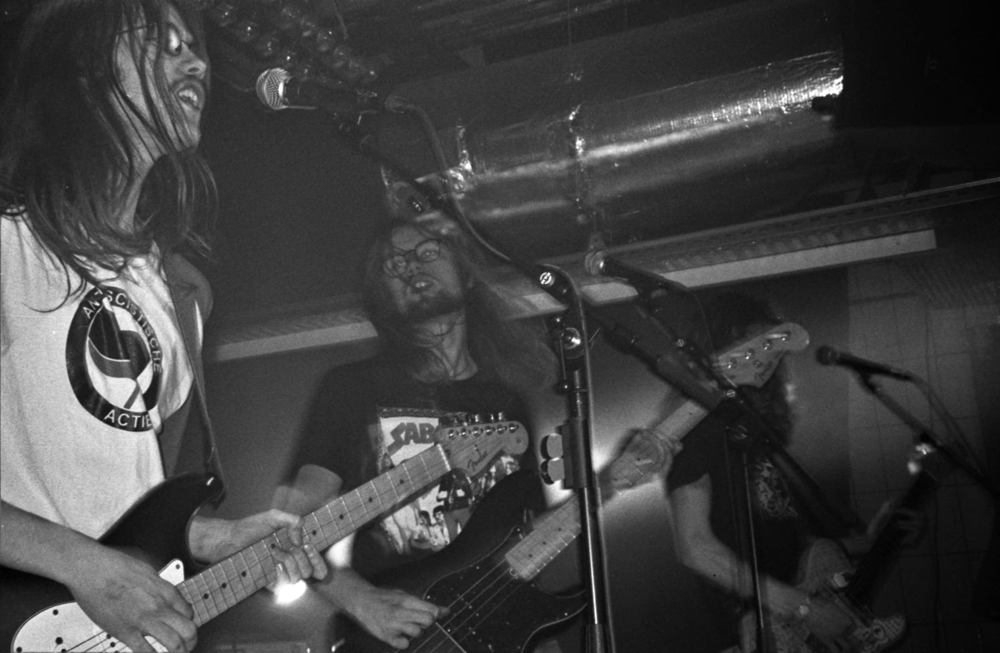
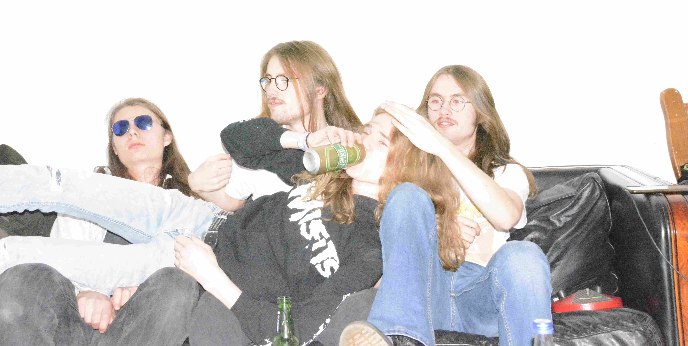
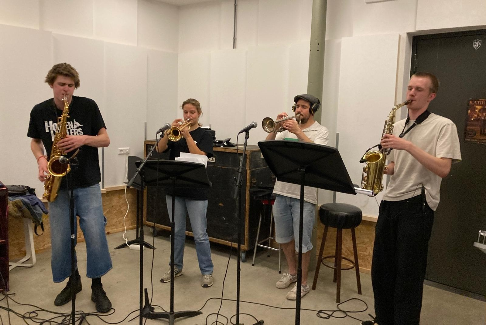
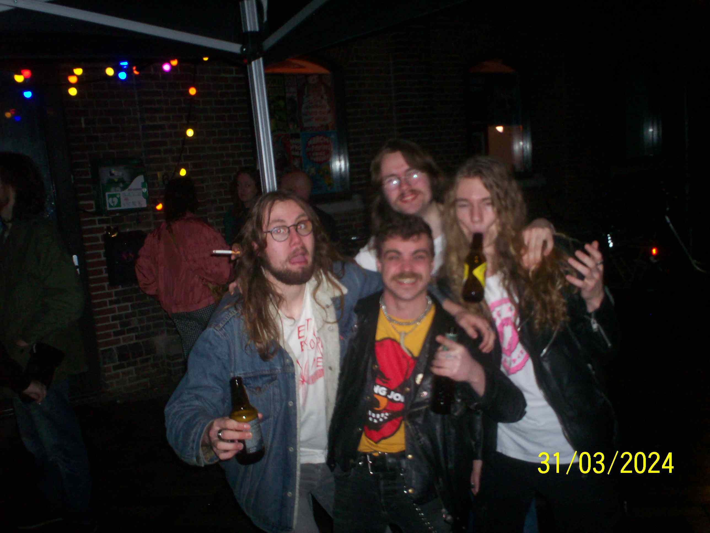

Het einde van een tijdperk | Door Thys
Op 7 november 2021 (ik heb de datum even opgezocht) gingen Daniël, Jason, Rowan en ik, samen met drie anderen voor het eerst naar een vreemd, voormalig leegstaand pand in Haarlem Oost. De reden ervoor was een aankondiging: gratis live punkbandjes. We maakte destijds al muziek samen, dus dit klonk als een onmisbare kans. Het pand heette natuurlijk Slachthuis 13 en wij hadden geen idee dat dit voor het aankomende halve decennium ons leven zou bepalen.
En nu moet het dicht. Voorgoed. Finito. Ik moet toegeven dat het niet een complete shock is. Al zolang ik me kan herinneren heeft het Slachthuis een fragiel bestaan geleefd. Toen het oude Slacht haar deuren sloot om elders in het pand de huidige zaal te openen, ging de vraag al rond of de magie bewaard zou blijven. Toen dat wel het geval bleek te zijn, mocht het nog geen jaar duren tot we op een overvolle tribune van de gemeenteraad zaten ten behoud van onze vrijplaats. Anderhalf jaar later zaten we er weer. Die novemberdag in Haarlem Oost waren we misschien de weg wel een beetje kwijt. Destijds was de omgeving nog echt een bouwput en bezoekers werd gevraagd wel erg zeker te zijn van hun zaak – “Moeten we hier echt zijn?”. Bij de deur stond een voor ons onbekend gezicht, dat van Martijn 13. Binnen vonden we talrijke soortgelijke gezichten: destijds nog onbekend voor ons. Ivo stond ongetwijfeld met een biertje bij het podium. Amber en Anna stonden destijds volgens mij achter de bar, Bart stond waarschijnlijk achter de knoppen van het mengpaneel en Buster zal er ook wel ergens te vinden zijn. De eerste maanden in het oude Slachthuis waren fantastisch. Als puber die net de coronapandemie uitkwam was het de manier om het huis te ontvluchten. Vrijdag, zaterdag, zondag. Vaak keken we niet eens wat speelde, het was het Slachthuis dus het moest wel goed zijn. Ik heb ik in die tijd misschien wel meer bands live zien spelen dan menig mens in hun leven doet. Maar ook leerde we nieuwe mensen kennen. Andere jonge mensen die muziek maakte. Onze gitarist Dani speelde in een synth-punkbandje genaamd Achterlicht en Seger, die nog wel eens op drums heeft ingevallen, speelde in een metalbandje genaamd Violent Silence. Waarom ik deze twee voorbeelden in het bijzonder noem, is omdat we beide bands live hebben zien spelen in het Slachthuis. Dan moesten wij dan ook maar. We wisten een set in elkaar te zetten en speelde onze eerste shows, onder de naam Eddie and the Roadcrew. Aanvankelijk in Flintys, maar ons derde optreden was in het destijds net gerenoveerde nieuwe Slacht. En de oude garde vond het prachtig. We maakten simpele boem pats nederpunk “zoals we het in de jaren 80 ook deden”. De Asbestboys, die destijds ergens anders speelde hoorde de verhalen en twee weken later vroeg Buster of we konden invallen voor een band die had afgezegd. Over de jaren heen hebben we met die band negen keer in Slacht gespeeld. We kregen de kans om onze eigen albumrelease te organiseren, inclusief bokswedstrijd op een springkussen. En we waren zeker niet de enige. We groeide op naast bands zoals Naaimachine en Waterschade, en uit combinaties van bandleden ontstonden weer bands zoals Inside Job en voor u als simpel websitebezoeker misschien wel het belangrijkst: Eskalatie. En dat brengt ons dan uiteindelijk waarom ik dit hier wil plaatsen. Zonder het Slachthuis was Eskalatie nooit opgericht. Zonder het Slachthuis had Eskalatie geen podium gehad. Mensen als Joar die ons herhaaldelijk geboekt heeft, ondanks zijn enorme aversie tegen ska en door bijvoorbeeld Bart die ons album opgenomen, gemixed en gemastered heeft. Op Bevrijdingspop speelde over een backline die we van het Slachthuis mochten lenen. En toen we onze plaat uit wilde brengen, kon dat in het Slachthuis. Vijf keer hebben we met Eskalatie in het Slachthuis opgetreden. Ons eerste optreden was in het Slachthuis en drie van die vijf shows waren helemaal uitverkocht. Nergens hebben ik met zoveel plezier op het podium gestaan. Als iemand mij later vraagt waar ik ben opgegroeid, kan ik ongelogen het Slachthuis in Haarlem zeggen. Het was mijn huiskamer, kroeg, uitgaansplek en oefenruimte. Mijn plek om creatief te zijn, huiswerk te maken, tot veel te laat aan de bar zitten, vrienden te maken, te dansen, te lachen en ergens tussendoor op een bank in de backstage in slaap te vallen. Het was alles.